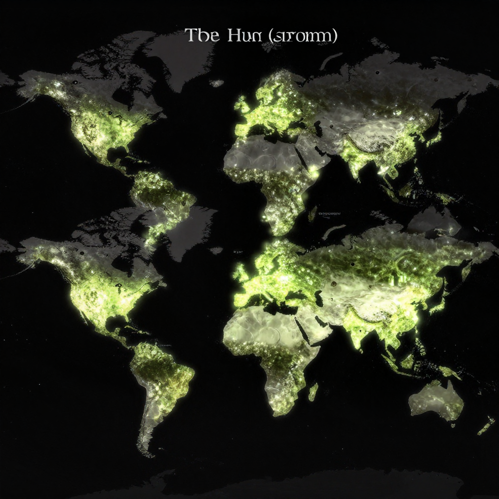

The Hum

The mysterious Hum - a sound only some people can hear!
Imagine hearing a constant, annoying buzzing sound that never stops. Now imagine that nobody else can hear it! That's the reality for thousands of people around the world who experience "The Hum" - a mysterious low-frequency sound that scientists still can't fully explain.
But here's the mystery: what causes this sound? Why can only some people hear it? And why does it appear in specific locations around the world?
What Is The Hum?
The Hum is a persistent low-frequency noise, often described as a diesel engine idling in the distance. It's usually heard indoors and becomes more intense at night. For those who can hear it, The Hum can cause sleep problems, headaches, and extreme distress.
Here's what makes it so mysterious: only about 2-5% of people in affected areas can hear it! Scientists call these people "Hum hearers."
🔊 What Does It Sound Like?
Most hearers describe it as a low rumbling, buzzing, or droning sound - like a distant diesel engine or refrigerator running constantly.
Famous Hum Locations

The Hum has been reported in locations around the world, from England to New Zealand!
The Hum has been reported in many places worldwide:
- Bristol, England: First reported in the 1970s, one of the earliest documented cases
- Taos, New Mexico: Famous for its mysterious Hum that began in the 1990s
- Kokomo, Indiana: Residents reported headaches and nausea from the local Hum
- Windsor, Ontario: The "Windsor Hum" has been investigated by the Canadian government
🌍 Global Phenomenon
The Hum has been reported on every continent except Antarctica! Each location seems to have its own unique version.
The Scientific Theories
Scientists have used sensitive audio equipment to try to identify the source of The Hum.
Researchers have proposed many explanations:
- Industrial equipment: Large fans, pumps, or compressors creating low-frequency vibrations
- Geological activity: Some Hums might come from earthquakes or underground water movement
- Electromagnetic waves: Some people might sense certain radio frequencies as sound
- Tinnitus: Some cases might be a form of internal ear ringing
- Colliding ocean waves: Ocean waves hitting each other can create very low-frequency sounds!
The Impact on Hearers
For people who hear The Hum, it's not just a curiosity - it's a serious problem. Many Hum hearers report:
- Sleep deprivation: The sound often gets worse at night
- Stress and anxiety: The constant noise can be maddening
- Social isolation: Others don't understand why they're suffering
- Desperation: Some have even moved away from their homes to escape it
😰 Real Suffering
At least one suicide has been linked to The Hum, showing how serious this mysterious phenomenon can be for those affected!
The Mystery Continues
Despite decades of investigation, The Hum remains unexplained. Some cases have been solved - the Bristol Hum was eventually traced to industrial equipment. But others, like the Taos Hum, remain mysterious to this day.
The Hum reminds us that there are still phenomena in our world that science cannot fully explain - and that some mysteries can have real effects on people's lives!
Clear Summary for Readers of All Ages
The Hum can sound dramatic, but the best way to understand it is to separate strong evidence from speculation. This article is written to be clear enough for younger readers while still useful for adults who want reliable context.
In simple terms, this topic matters because it connects three ideas: what happened, how we know, and what remains uncertain. The core story in The Hum is easier to follow when we use a timeline, define key terms, and point directly to sources.
Imagine hearing a constant, annoying buzzing sound that never stops. Now imagine that nobody else can hear it! That's the reality for thousands of people around the world who experience "The Hum" - a mysterious low-frequency sound that scientists still can't fully explain.
Background Timeline (What Happened, Step by Step)
- Research on The Hum developed over time rather than from a single discovery.
- As new evidence appeared, expert opinions on The Hum became more specific and testable.
- Today, The Hum is best understood by comparing early reports with current research methods.
- Experts continue revisiting The Hum as better tools and stronger source checks become available.
- Experts continue revisiting The Hum as better tools and stronger source checks become available.
This timeline view helps younger readers build a mental map, and it helps adult readers evaluate whether later claims fit the documented sequence of events.
What We Know with Strong Support
Across discussions of The Hum, several points are consistently supported by records or repeatable analysis:
- Imagine hearing a constant, annoying buzzing sound that never stops.
- That's the reality for thousands of people around the world who experience "The Hum" - a mysterious low-frequency sound that scientists still can't fully explain.
- The Hum is a persistent low-frequency noise, often described as a diesel engine idling in the distance.
- For those who can hear it, The Hum can cause sleep problems, headaches, and extreme distress.
These claims are stronger because they can be checked independently, rather than depending on one dramatic story or one unverified source.
How Researchers Study This Topic
Good history is a method, not just a story. When experts examine The Hum, they usually combine source criticism, technical analysis, and contextual comparison.
- Researchers collect instrument data first, then compare eyewitness reports with weather, aviation, and technical records.
- Investigators try to rule out ordinary explanations before considering rare or unusual hypotheses.
- Independent replication matters: a claim is stronger when separate teams can observe or verify similar patterns.
For readers aged 7+, a simple rule is helpful: if someone makes a big claim, ask, “What is the evidence, and can another expert check it?”
What Experts Still Debate
Even with good evidence, not every question has a final answer. In The Hum, debates often continue because the surviving data is incomplete, damaged, or interpreted in different ways.
One common source of confusion is mixing the topics of What Is The Hum?, Famous Hum Locations, and The Scientific Theories as if they prove the same thing. In reality, each part of the story may require different standards of proof.
A balanced approach is to keep uncertainty visible: we can confidently state what records show today, while leaving room for future evidence to update the picture.
Myths vs. Evidence
Myth: If a topic is mysterious, experts have no idea what happened.
Evidence-based view: Usually, experts know many parts of the story; the debate is about specific details.
Myth: The most dramatic explanation is probably true.
Evidence-based view: The best explanation is the one that matches the most verifiable facts with the fewest assumptions.
Myth: New claims automatically replace old research.
Evidence-based view: New claims become accepted only after careful checks, replication, and critical review.
Why This Story Still Matters Today
The Hum is not only a curiosity from the past. It is also a practical lesson in how people evaluate information. In a world full of fast headlines, this topic reminds us to slow down, check sources, and separate confidence from certainty.
For younger readers, this builds critical-thinking skills. For adult readers, it improves media literacy and historical judgment. In both cases, the goal is the same: understand the past clearly enough to make better decisions in the present.
Mini Glossary (Plain Language)
- Primary source: A record made close to the event, like a report, letter, inscription, or official document.
- Secondary source: A later explanation that interprets primary evidence.
- Hypothesis: A proposed explanation that must be tested against evidence.
- Consensus: The view most experts currently support, knowing it can change with new data.
- Instrument data: Measurements from devices such as cameras, radar, or sensors.
- False positive: A result that looks meaningful but is caused by error or misidentification.
Quick Recap
If you remember only three things about The Hum, keep these: (1) there is real evidence worth studying, (2) some questions remain open, and (3) careful source-checking is the best path to reliable understanding.
That combination of curiosity and caution is what turns a mystery into a meaningful history lesson for readers of every age.
Extended Context for Deeper Reading
When we revisit The Hum with patience, we usually find that the most useful progress comes from careful comparison: compare early reports with later analysis, compare confident claims with documented limits, and compare popular retellings with primary evidence. This method is not flashy, but it is reliable. It helps readers of every age build accurate understanding without losing curiosity.
Family-Friendly Explanation
If you are reading about The Hum with a younger learner, one helpful method is to ask three simple questions: What happened? How do we know? What is still uncertain? These questions keep the discussion clear, honest, and easy to follow without removing the excitement of discovery.
For adult readers, the same framework supports better judgment. It prevents overconfidence, encourages source checking, and makes it easier to separate evidence from storytelling style. That balance is one of the most useful habits history can teach.
Another reason this topic remains valuable is that it shows how knowledge improves over time. Early reports on The Hum often reflect limited tools and local assumptions. Later researchers can test those claims with stronger methods, broader comparison sets, and more transparent standards. The result is not always a single final answer, but usually a more accurate map of what is known and what remains open.
References & Further Reading
Editorial note: We cross-check claims across multiple independent sources. See our Editorial Policy.